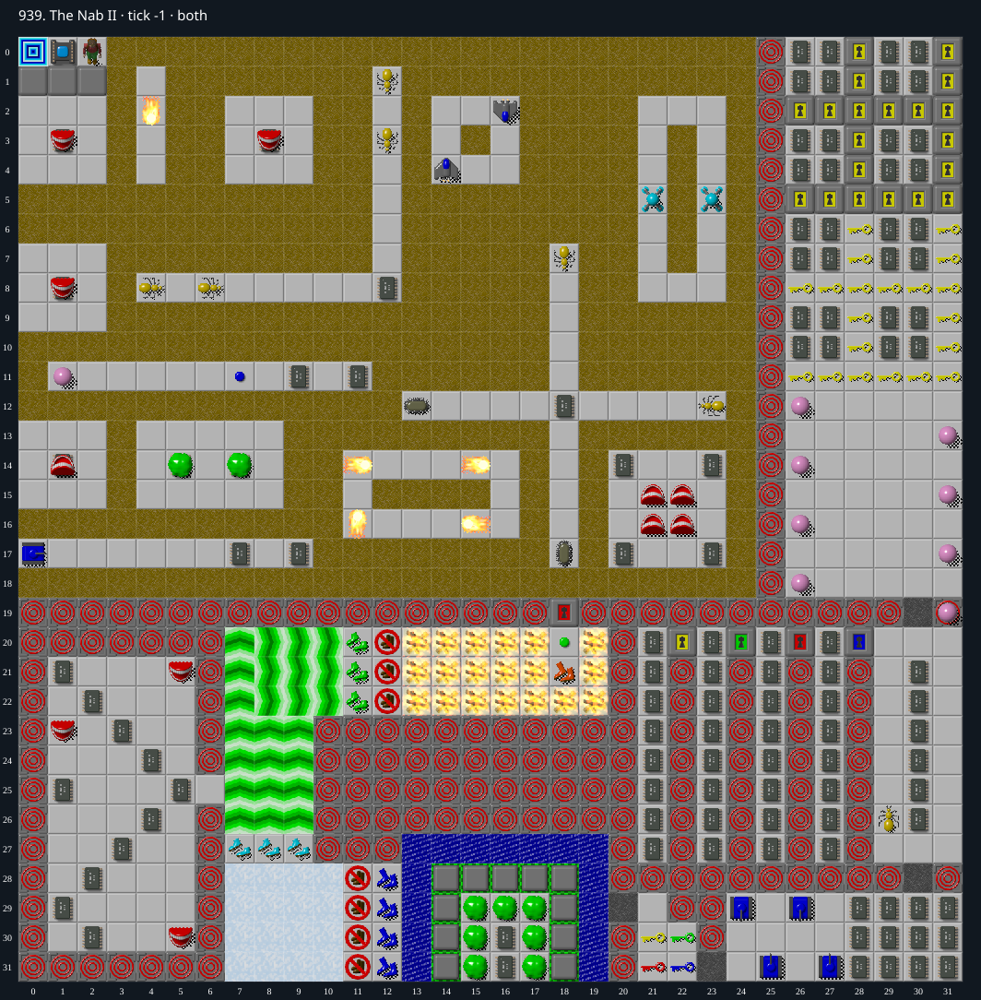

Jacques · Original Tile World MS
939. The Nab II
Impossibility argumentThe only passages out of the upper area strip the sole fire boots, making return to the exit lethal. Staying inside yields at most 317 of 411 required chips.
411 chips required · 999 second time limit
Why completion is impossible
- The sole Exit is (0,0). It can only be entered through Socket (1,0): (0,1) is a permanent Wall and the other two sides are board boundaries. Therefore all 411 required chips must be collected before returning to the upper area.
- Consider the three Burglar cells (12,20), (12,21), and (12,22). Each has Fire immediately east at (13,20..22). Permanent Walls and Clone Machines leave those three cells as the only passages from the upper starting area and fire-boots room into the rest of the board.
- The only Fire Boots in either plane are at (18,21), on the upper-area side of this boundary. Entering any of the three burglars clears all boots. No Fire Boots exist beyond the boundary. Returning east from the burglar strip must enter one of the three Fire cells without immunity, which burns Chip. Moving north or south within the strip does not bypass the Fire.
- The barrier cannot be removed: there are no blocks, teleports, or cloner connections anywhere in the level. Clone Machines and ordinary Walls are permanent. Monsters do not extinguish Fire or consume burglars; their ordinary arrival and departure preserve those tiles. Overlapping a moving actor with the player is a losing collision, not a traversable replacement for the strip.
- For a conservative upper bound, block only permanent Walls, Clone Machines, and the three one-way burglar boundary cells. Grant unrestricted passage through every other tile, including all fire, dirt, doors, actors, sockets, force floors, ice, and toggles. The start component has 494 cells and contains exactly 317 chips across both original planes. The complete sets are recorded in 939-cut.json; the other 126 chips lie outside.
- A play that leaves this component cannot return to its sole exit. A play that remains in the component can collect at most 317 chips, below 411, so its exit socket cannot open. Therefore no play can complete the level.
Inspect both layers
The main map shows the initial runtime state. Switch to the buried layer to inspect hidden terrain and items. Hover coordinates are also available in the downloadable SVG.


Recorded checks and attempts
- constructive prefix: Reached the fire-boots room through Red Door (18,19), collected the only Fire Boots at (18,21), then crossed west onto Burglar (12,21). Inventory immediately lost fire immunity.
- original C reentry probe: An eastward attempt from Burglar (12,21) entered Fire (13,21) and failed at tick 4328. Original C and TypeScript traces match exactly for all 4329 steps, with empty native stderr. The earlier prefix and this illustrative failure do not by themselves prove impossibility.
- permissive graph assertion: Production MS_TILE identities and both planes reproduce a 494-cell component containing 317 chips; sole Fire Boots, sole Exit, socket geometry, absence of blocks/teleports/cloner links, and each Fire/Burglar boundary pair are asserted.
Evidence
- Structured report
- 939-burglar-probe.json
- 939-burglar-probe.svg
- 939-burglar-probe.tws
- 939-cut.json
- 939-cut.png
- 939-cut.svg
- 939-initial.svg
- legacy_c/mslogic.c:871-872 (Clone Machine blocks entry)
- legacy_c/mslogic.c:1034-1042 (socket quota and door checks)
- legacy_c/mslogic.c:1623-1626 (Fire without boots burns Chip)
- legacy_c/mslogic.c:1658-1664 (Burglar clears every boot type)
- legacy_c/mslogic.c:1712-1734 (monster arrivals preserve Fire and Burglar)
- legacy_c/mslogic.c:1737-1738 (departure restores underlying tile)
- legacy_c/mslogic.c:1829-1831 (Exit completion)
- legacy_c/mslogic.c:1833-1840 (actor-player collision)